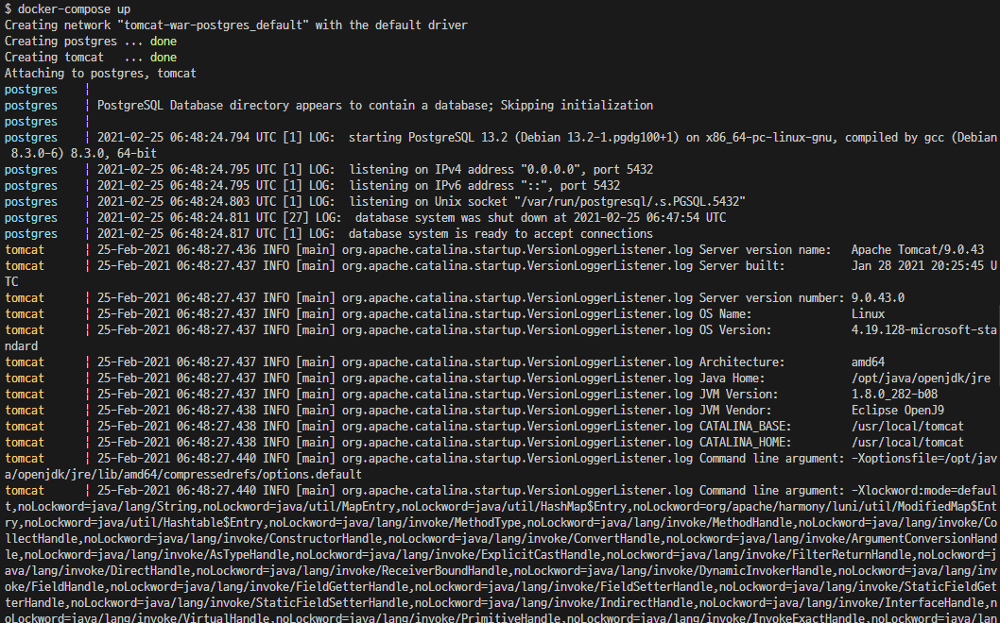

도커를 설치 한 다음에는 본격적으로 Docker container 환경을 구성해보겠습니다.
아래의 내용을 따라 진행해주세요.
# FROM <image> - image로 부터 명세를 시작한다. FROM tomcat:9.0.43-jdk8-adoptopenjdk-openj9 # EXPOSE <port> - 선언한 포트번호를 열어둔다. EXPOSE "8080" # ENV <key> <value> - 해당 컨테이너 내에 환경변수를 설정한다. ENV DB_URL jdbc:postgresql://postgres:5432/postgres ENV DB_USERNAME postgres ENV DB_PASSWORD postgres # COPY <local source> <docker container source> # - 로컬의 local source에 해당하는 것을 docker container의 source로 복사 한다. COPY ./war/app.war ./webapps/ROOT.war # WORKDIR <path> - path에서 작업을 시작함 WORKDIR /usr/local/tomcat
여기서 중요한 것은 환경변수 설정입니다.
본 예시를 작성하기에 앞서, 실습 속도를 줄이기 위해
미리 Spring Boot를 이용해 간단한 WEB APP을 작성 했습니다.
그리고 이를 WAR로 Bundle해 준비해놨습니다.
Spring Boot에서는 갖가지 설정들을 application.properties 또는 yaml 등의 파일로 관리합니다.
제가 작성한 App의 경우, 아래와 같이 작성해뒀습니다.
# application.yaml 중 일부 spring: datasource: url: ${DB_URL} # < 이곳에 jdbc:postgresql://postgres:5432/postgres 가 자리잡음 username: ${DB_USERNAME} # < 이곳에 postgres 가 자리잡음 password: ${DB_PASSWORD} # < 이곳에 postgres 가 자리잡음 driver-class-name: org.postgresql.Driver
따라서, 위의 Dockerfile에서 작성한 환경변수(ENV)가
Tomcat이 실행할 war파일에 담긴 application.yaml 내부에서 사용되게 되는 것이죠.
또 한가지 특이한 점은 datasource.url 값입니다.
jdbc:<database>://<host>:<port>/<database_name>jdbc:postgresql://postgres:5432/postgres즉, host가 postgres로 설정하는 것인데요,
이는 바로 이어 작성할 docker-compose에서 DB로 활용할 Postgres의 서비스 명을 "postgres"로 설정했기 때문입니다.
이처럼, 컨테이너간 통신시에는 각각의 service명을 host로 하여 통신할 수 있도록 구성할 수 있습니다.
# docker-compose의 버전명시 version: '3' # 서비스 구성, 상세한 내용은 아래에 이어 작성 services: postgres: container_name: postgres image: todaksun/postgres13-postgis volumes: - pgdata:/var/lib/postgresql/data ports: - '5432:5432' environment: POSTGRES_USER: postgres POSTGRES_PASSWORD: postgres tomcat: container_name: tomcat build: context: . dockerfile: ./Dockerfile ports: - '8080:8080' depends_on: - postgres # docker volume. 없으면 새로 만든다. volumes: pgdata:
위의 내용은 우리가 작성해야할 docker-compose.yml의 전 내용입니다.
이렇게 작성한 내용만으로도
compose 명세를 보면, services 하위의 두개의 서비스가 존재하는 것이 보입니다.
각각은 비슷하면서도 조금씩 다르게 작성이 되어있습니다. 이를 상세히 살펴보겠습니다.
postgres 서비스
postgres서비스는 이미 누군가 배포해놓은 이미지를 사용합니다.
postgres: container_name: postgres #docker container의 명을 설정한다. image: todaksun/postgres13-postgis #사용할 image를 작성한다. volumes: # 매핑할 볼륨 리스트를 작성한다. - pgdata:/var/lib/postgresql/data ports: # Host의 Port와 Container Port를 매핑한다 - '5432:5432' environment: # 환경변수를 차례로 설정한다 POSTGRES_USER: postgres POSTGRES_PASSWORD: postgres
image :
도커 설치 후, 특별한 설정하지 않는다면 기본적인 원격 레포지토리는 Dockerhub가 됩니다.
이 Dockerhub에는 많은 이미지들이 등록되어 있어, 누구나 편하게 이미지를 받아 사용할 수 있습니다.
위의 todaksun/postgres13-postgis 이미지는
postgres13버전에 postgis를 설치해 extension으로 활용할 수 있게
미리 구성해놓은 이미지입니다.
내용이 궁금하시면 https://github.com/todak-sun/docker-lib/tree/main/postgres13-postgis 에서 확인해주세요.
volumes:
볼륨은 저장공간으로 이해하시면 됩니다.
여기서의 볼륨 매핑은 docker container 내부의 공간(또는 파일) 과 docker volume 을 연결한다고 이해하시면 됩니다.
즉, postgresql이 데이터를 저정하게되는 위치/var/lib/postgresql/data 에 별도의 docer volume을 생성해 매핑하는 것이죠.
만약 데이터베이스의 컨테이너가 사라지게 되면 저장된 모든 데이터도 사라지게 됩니다. 따라서, 언정적인 관리를 위해 데이터가 저장될 공간을 별도의 공간으로 활용해 저장해두는 것입니다.
enviroment:
Dockerfile에서 설명한 것과 같이 해당 컨테이너 내부의 환경변수를 설정합니다.
tomcat 서비스
tomcat 서비스는 누군가 작성해놓은 이미지를 시작으로 우리가 필요로 하는 것을 추가 명세한 Dockerfile를 통해 새로운 Image를 build한 후 사용합니다.
그렇다면, 왜 tomcat 서비스는 그대로 사용하지 않고, 굳이 Dockerfile을 따로 작성하는 과정을 거칠까요? 바로, tomcat에 올릴 war를 묶어서 build할 필요가 있기 때문입니다.
기본 tomcat 이미지를 바로 컨테이너로 띄울 경우에는 당연히 아무것도 존재하지 않습니다. 따라서, tomcat이 실행되기 전(컨테이너가 시작되기 전) war를 넣어주기 위해 Dockerfile을 통해 war를 넣어주는 작업을 선행했습니다.
tomcat: container_name: tomcat build: # 아래의 내용으로 이미지를 빌드 context: . # Dockerfile의 실행 컨텍스트 dockerfile: ./Dockerfile # 이미지 빌드시 사용할 Dockerfile 경로 ports: - '8080:8080' depends_on: # 의존하고 있는 서비스 - postgres
build:
이미지를 직접 사용하지 않고 빌드할 것임을 기술해줍니다.
depends_on:
의존하고 있는 서비스의 목록을 작성합니다.
의존하고 있는 서비스란, 현재 서비스(예시에서는 tomcat) 컨테이너가 실행되기 위해서 먼저 실행될 필요가 있는 서비스(예시에서는 postgres)를 의미합니다. 이곳에 "서비스명"을 작성하시면 됩니다.
이렇게 되면, 의존하고 있는 서비스들이 모두 실행된 후, 해당 서비스가 실행됩니다.
# docker-compose.yml을 읽어 각 서비스 컨테이너를 실행하는 명령어 docker-compose up # docker-compose.yml에 작성된 각 서비스 컨테이너를 종료(stop)하고, 제거(remove)하는 명령어 docker-compose down
모든 코드작성이 완료 되었다면, 이제 docker-compose up을 실행합시다.

위와 같이 잘 실행되고 있는것을 확인할 수 있습니다.
작성한 코드를 한 줄 한 줄 설명하다보니 내용은 길어졌지만, 결국 우리가 한것은 그저 Docker를 설치하고, 합쳐봐야 100줄도 안되는 짧은 코드를 통해 인프라 설정을 완료했습니다.
만약, 이를 도커를 통하지 않고 직접 했다면 어떤일을 해야 했을까요?
이 과정을 진행하면서 수반될 많은 명령어들과 실수로 인한 스트레스는 상상만해도 끔찍합니다.
단단한 실서버 운영을 위해 하는 작업이라면 몰라도,
개발용도의 환경을 구성하는데 위와 같은 작업을 하다보면 진한 현타가 옵니다.
하지만, 도커는 코드를 통해 인프라를 편하게 구축(Infrastructure as code)할 수 있도록 돕습니다.
가장 좋은 점은, 이렇게 명세화한 문서와, Docker가 설치된 Host PC만 존재한다면 어디서든 같은 환경으로 인프라를 단숨에 구축할 수 있다는 것입니다.
물론, 학습을 하다보면 막히는 부분은 있지만
도커를 어느정도 이해했을 때 찾아올 편안함에 비교하자면 학습 비용은 저렴하다는 의견 드립니다.